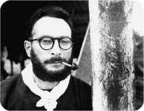

CLAUDE LÉVI-STRAUSS
Jochen Winter'in uyarladığı versiyondan yapılan tercüme edilmiştir.
Claude Lévi-Strauss (1908 yılında Fransız anne babadan Brüksel'de doğdu) çağımızın önde gelen kültürlerarası şahsiyetlerinden, yirminci yüzyılın en önemli antropologlarından biridir, etkisi kendi disiplininin sınırlarını büyük ölçüde aşar. Önce felsefe öğrenimi görür, doçentlik sınavını verir. Etnolog olarak kariyerine 1934'te, yapısalcı nitelemesiyle São Paulo'da sosyoloji dersleri vermeye davet edildiğinde başlar. Burada 1939'a kadar kalacaktır. İlk gezisini Brezilya'daki Nambikwara yerlilerine yapar. Bu geziyi daha sonra Tristes tropiques'te (Plon, 1955) [Hüzünlü Tropikler] anlatacaktır. 1939'dan itibaren Amerika Birleşik Devletleri'nde yaşamaya başlar ve İkinci Dünya Savaşı sırasında New York'ta Roman Jakobson'la karşılaşması yapısalcı dilbilimle ilgilenmesine yol açar. Böylelikle, yapı kavramının toplumsal olgulara uygulanmasının verimliliğini fark eder.
1948 yılında Fransa'ya geri döner ve Ecole Pratique des Hauts Études'de ders verir. Doktora tezini akrabalık sorunları üzerine verir: Les structures élémentaires de la parenté (Mouton, 1949) "yapı" kavramının etnolojiye girişine işaret eder.
1958 yılında Anthropologie structurale'i (Plon) yayımlar. Aynı yıl, Collège de France'ta toplumsal antropoloji kürsüsüne profesör olarak atanır. 1962 yılında Le totémisme aujourd'hui (PUF) ve La pensée sauvage (Plon) yayımlanır. Ardından, yapısalcı yöntemi mitlerin incelenmesine uygular. Mythologiques dört cilt halinde Plon yayınlarından çıkar: Le cru et le cuit (1964), Du miel aux cendres (1967), L'origine des manières de table (1968) ve L'homme nu (1971).
1973 yılında Lévi-Strauss Fransız Akademisi'ne seçilir. 1975 yılında La voie des masques'ı (Plon) yayımlar. Collège de France'taki derslerine 1982'ye kadar devam eder ve bu tarihte emekliye ayrılır. Kitap yayımlamaya devam eder: Le regard éloigné (Plon, 1983), La potière jalouse (Plon, 1985), De près et de loin (O. Jacob, 1988) ve Histoire de Lynx (Plon, 1991).

STRAUSS
Claude Lévi-Strauss, Batı kültürlerinin "ilkel" olarak nitelenen kültürlerden ve mitlerinden ders almaya karar vermesi gerektiği kanısındasınız. Lévy-Bruhl'un, The World of the Primitive Man'de Paul Radin'in ve de Michel Leiris'in saptamış oldukları gibi, bu toplumlardaki dinsellik duyusu sanki insan yaratıcılığının kökensel gücü gibi ifade buluyor.
Sanırım bizim kültürlerimizden ziyade felsefi ve bilimsel düşünme tarzlarımızın bunu yapması gerekir, çünkü bunlar bambaşka bir yönde gelişim gösteriyor. Mitin içine kök salmış insanın, kendisini niteleyen imkânlarla birlikte, özellikle bize ait olan ve tek tek bilimsel disiplinlerin çözmesini beklediğimiz sorular sorduğunu görmemiz gerekir. Mitler üzerine çalışmam, entelektüel modellerin, fikir, kanaat ve eğilimlerin, evrimin her kademesiyle akrabalık içinde olduğu görüşümü güçlendirdi.
Yaban Düşünce'de, arkaik bakış açısı ile modern bakış açısı arasında temel bir bölünme olmadığını açıklıyorsunuz. Sonuç olarak, bu ilkel dünyanın değerini azaltıcı yargılarda bulunmaya hakkımız yok.
Asla herhangi bir bakış açısının diğerinden daha iyi olduğunu ileri süremem. Ama yirminci yüzyılın bir Batılısı olarak, Batı'da kendini dayatan bilimsel bakışın daha "ilerici" olduğunu kabul ediyorum, ama bu bizi başka gerçeklik biçimlerini incelemekten ve bunları kendi düşünme süreçlerimize katmaktan ibaret görevden muaf kılmaz.
Dolayısıyla sizin kültür antropolojinizde, tüm uzamımıza yansıtılmış bir senkroniklik adına kronolojik bir kavrayışı terk etmekle suçlanmanız mümkün değil mi?
Hayır, böyle bir suçlama olamaz gerçekten. Ben kendimi bir tarihçi olarak görüyorum. Bununla birlikte, farklı gerçekliklerin tezahür ettiği bir düzenin doğuşunu ve işleyiş tarzını anlamak için, bunun hangi yapısal öğelerden oluştuğunu kesin olarak bilmek gerekir.
Keza, "ilkel" kültürlerin zamandışı ya da statik olduklarını, ileri uygarlığa sahip toplumların ise, Roger Bastide'in saptadığı gibi, tarihsel sürece tabi olduklarından antropoljik incelemenin dışında kaldıklarını da ileri süremeyiz.
Kesinlikle! Bizim "ilkel" olarak nitelediğimiz –ve günümüzde büyük ölçüde ortadan kaybolmuş– kültürler de tarihin içinde yer alırlar, daha geç tarihli toplumların başına gelen şeyler onların başına da gelmiştir – savaşlar, salgınlar, göçler. Gerçek farklılık kimilerinin tarihe bir ilgisinin olması ve bundan yararlanmaya çalışması, diğerlerinin ise tarihin içinde olduklarına pişman olmaları ve bunu iyi kötü aşabileceklerini bütün güçleriyle hayal etmeleridir. Ama bu eğilim yazılı geleneklere sahip toplumlarda da egemen olabilir ve onlara özellik katacak tek öğe bu değildir.
André Leroi-Gourhan'ın düşüncelerinde sözünü ettiği tarih öncesi kültürlerin dönüşümünü incelemeyi hiç düşünmediniz mi? Sizin niyetiniz etnoloji ile şimdiki zaman arasında bir bağ kurmak, etnolojiyi günümüz kültürleriyle diyaloğa sokmak mıdır?
Bizim toplumlarımızla doğrudan doğruya çatışan birkaç araştırma yürüttüm yalnızca. Brezilya'da kaldığım sırada oldu bunlar. Genç öğrencilerimi kendi şehirleri olan São Paulo'da alan çalışması yapmakla görevlendirdim. Birlikte toplumsal morfoloji üzerine bir dizi inceleme gerçekleştirdik. Bunların kimi izleri yerel üniversitenin arşivlerinde hâlâ bulunabilir. Fransa'da bu türden projeleri kişisel olarak yürütmedim, ama teşvikçisi oldum ve denetledim. Benim kurduğum ve yönettiğim Toplumsal Antropoloji Laboratuarı bazı Bourgogne köyleri hakkında kapsamlı incelemeler yayımladı.
Antropolog Clifford Geertz ile Mary Douglas'ın kendilerine sordukları soruyla, mitler sizin gözünüzde dünyayı açıklamayı sağlayan içkin paradigmalar mıdır?
Ben "içkin" terimini kullanmam. Büyük laf bu ve öncelikle belirli bir anlamı üzerinde anlaşarak işe başlamak gerekir. Ama mitler cismani dünya ile toplumsal dünyanın kimi yanlarını açıklama yönünde bir teşebbüstür elbette. İnsanların karşılaştıkları kimi güçlüklerle aynı gerçekliğin kimi başka düzeylerini ardışık olarak ilişkiye sokarlar ve böylece aşağı yukarı her düzeyde aynı şeyin cereyan ettiğini ortaya koyarlar.
Siz Kuzey ve Güney Amerika yerli kültürlerinin mitleriyle Avrupa'nın Graal efsanesini karşılaştırdınız. Bu mümkün müdür? Zaman ve mekân içinde birbirinden bunca uzak kültürler arasında bu türden akraba yapılar olduğu varsayılabilir mi?
Bu, tekyanlı bir cevap getirilemeyecek çetin bir sorundur. Şunu düşünebiliriz: Homo sapiens'in ataları, örneğin homo erectus, dile zaten sahipti, daha da önceye dayanan homo habilis'te ise en azından kimi dilsel biçimler mevcuttu. Bu dönemden itibaren muhtemelen mitler var oldu ve bunların ana hatları çok uzun süre varlıklarını korudular; sonuç olarak, tüm dünyada yayılmış paleolitik bir mirasın varlığı fazlasıyla mümkündür. Bu tür tarih öncesi spekülasyonlardan uzak dursak bile, insan yine de her yerde ve her zaman aynı biçimde işleyen bir beyne sahiptir, bu nedenle düşünce içerikleri arasındaki uyum ve yatay bağlar tamamen normal gelebilir.
Richard Wagner'in eseri sizin mit üzerine araştırmalarınızda nasıl bir rol oynamaktadır?
Bu konuda pek net bir fikrim yok. Kesin olan, ailemin Wagner'a bir saygısının olduğu ve beni çocukluğumdan beri onun müziğine ve düşüncesine aşina kıldıklarıdır. Çok daha sonraları mitler üzerine çalışırken, Wagner'in, Nibelungen ve Edda sagasını ele alırken benimkinden kökten farklı bir yol izlediğini saptadım. Şiirsel metin zaten belirli bir yorumlama modeli sunmaktadır, oysa ki müzik kendi kaydı içinde, neredeyse bağımsız, kendi içinde tamamlanmış bir yorum sağlamaktadır. Buna karşılık ben, mitin katmanlı bir yapısı olduğunu ve bunun da ancak birçok düzeyde gözlemlenirse kavranabileceğini göstermek istedim. Her şeye rağmen, edebi yorum ile müzikal yorumu uyumlandırmaktan ibaret olan Wagner'in yöntemi, belki de bana farkına varmadan model olarak hizmet etmiştir.
Bizim kronometrik zamanımızda mitin hâlâ bir anlamı var mı?
Fiziksel, kimyasal, meteorolojik ve diğer fenomenleri açıklarken bilim insanları mitsel bir kültür varlığına dayanmamaktadırlar. Ama arkaik toplumlardaki mitle aynı değere aşağı yukarı sahip bir alan kalır geriye; tarihten söz etmek istiyorum. Bizim tarihi hissediş ve yorumlayış tarzımız bizi yine geçmişi yeniden oluşturma, şimdiki zamanı anlama ve gelecek zamanı şekillendirme konumuna yerleştiriyor.
Evrimin çerçevesi içinde insan varlığının ve canlı olan her şeyin kapasitesini gerçekten aydınlatabilmek için doğa bilimlerinin de bir metafiziğin, hatta kimi zaman bir inancın ardından gitmesi gerekmez mi? Bir tür şiirsel boyutla kendi konularına yaklaşmaları daha doğru olmaz mı?
Bu bağlamda metafizik ve inanç hakkında hiçbir şey söyleyemem. Ama bütün sorunları –özellikle doğa bilimlerininkileri– ve bütün canlı yaratıkları, ister insan, ister hayvan ya da bitki düzeninde olsunlar, bir estetik duyusuyla ele almamız kesinlikle şarttır. Güzellik onları anlamamızı sağlayan bir anahtardır.
Bilim ile din arasındaki ilişkiler üzerinde düşünmekten asla vazgeçmemiş olan Albert Einstein Dünya Görüşüm başlıklı 1931 tarihli bir denemede şunu yazdı: "Bizim nüfuz edemeyeceğimiz bir şeylerin varolduğunu bilmek, aklımızın ancak en ilkel biçimlerine nüfuz edebildiği en derin aklın ve en çarpıcı güzelliğin tezahürlerini tanımak: Gerçek dinselliği oluşturan şey işte bu bilgi ve bu duygudur... Yaşamın sonsuzluğunun gizemi, mevcut dünyanın hayranlık verici yapısının bilinci ve duygusu, doğada tezahür eden aklın, ne kadar küçük olsa da bir bölümünün kavranmasına adanmış arayış: Bütün bunlar, benim açımdan, bana yeter."
Evet, bu bölümü biliyorum...
Einstein'ın kavrayışı, doğa ve insan bilimleri için bir tür temel kod içermiyor mu?
Hem evet hem hayır. Şu kaydı koymalıyım: Zamanımın büyük bölümünü adadığım dinsel inançlara karşı büyük bir saygı hep hissettiğim doğrudur; ama benim gözümde bunlar yalnızca insanın anlamadığı şeyi belirtmekte ve somutlaştırmaktadır. Pek az şey bildiğinden, sonuç olarak kendi içinde bir yetersizlik duygusu taşıdığından, bu olumsuz gerçekliği, sonunda "Tanrı" adını verdiği olumlu bir gerçekliğe dönüştürmeye çalışır. Bu tür bir eylem ona entelektüel ve duyumsal bir tatmin sağlar. Diğer yandan, evrenin karmaşıklığı ve güzelliği karşısında, bizi çevreleyen yaratıkların toplamı karşısında Einstein'ın tutumunu gayet iyi anlayabilirim. Bununla birlikte, kimilerinin "kutsallık duyumu" olarak adlandırdıkları şeyi ben ancak bir çiçek karşısında, bir hayvan karşısında hissediyorum ve bu duygu oldukça muğlak.
Demek ki sizin gözünüzde bilim ile inanç arasında temel çelişki yok, öyle mi?
Yok. Son derece değerli bilim insanlarının derin birer inançlı olduklarını da deneyim bize öğretiyor. Şunu da belirtmeliyim ki ben onlardan değilim. Bir inancın yandaşı olma fikri bana kesinlikle yabancı... Bununla birlikte, kendimi çoğu zaman rasyonalistlerdense inançlı insanların yanında daha iyi hissederim.
Gerçekten mi? Bunu nasıl bağdaştırıyorsunuz?
İnananlarda bir gizem duyusu vardır. Onlar burada olumlu bir şey görürlerken ben tamamen olumsuz bir şey görüyorum. Ama onların tutumları yine de içinde buluşabileceğimiz bir atmosfer yaratır.
Yaşamın her alanının cebirleştirilmesinden insanın kaçabileceği tezini ve yalnızca matematik ölçü terimleriyle düşünmeyi hedefleyen her yaklaşımın –büyük fizikçiler Werner Heisenberg ile filozof da olan Carl Friedrich von Weizsäcker'in belirttiği gibi– insanlıkdışı olduğu tezini savunabilir miyiz? Günümüzde yalnızca bilimlere değil, sanata ve gündelik yaşama da egemen olan bu niceleyici ve kutsallıkdışı gözlemi yine de bir tehdit olarak kabul ediyor musunuz?
Evet, bunların sonuçlarının neler olduğunu tek tek saptayarak başlamak gerekse bile bu böyle. Geleneksel toplumlar, özellikle, sonsuzca büyük olmayan bir topluluk içindeki kişiler arasında görülen sahici bir iletişimle diğerlerinden ayrılırlar. Tersine, patlayıcı bir büyümeye tabi olan modern toplumların geçirdiği büyük demografik dönüşümleri ele alırsak, bu toplumların niteliksel bileşenlerinin de dönüşmüş olduğunu gayet iyi görürüz. Bu durum, başka şeylerin yanı sıra, toplumsal ilişkilerde sahicilik yitimine de yol açar. Bu ilişkilere, özü gereği, farklı aracı merciler kılavuzluk eder ve bu merciler de fiilen sayısallaştırıp numaralandırır. İstatistikler oluşturulur, soru formları hazırlanır, sayımlar yapılır, vs. Bizim toplumlarımızın bir hoşnutsuzluğu, bir kusurudur bu elbette ve kimi zaman övgüler düzülen ilerlemenin arka yüzünü belirtir.
Arkaik ve ilksel kültürlerin yıkımına eşlik eden bu kayıp, insan kimliğinin bu yitimi sizi üzmüyor mu?
Beni şaşırtıyor, çünkü bence insanlığın zenginliği ve serveti tam da yaratmaya muktedir olduğu ve yitimini benim de yakından yaşayabildiğim inançların, âdetlerin, edebi ve estetik ifade biçimlerinin çeşitliliğine bağlıdır. Kendi kendime, "Kimi geleneksel öğeler varlığını sürdürür," diyerek biraz teselli buluyorum. Ama şu da var: İnsan varlığının doğasında bu tür farklılıkları üretmek varsa, gelecekte de bunları kendi içinden bulup çıkaracaktır, ama bunlar benim bildiklerim ve sevdiklerim olmayacaktır. Bunu derken şunu da unutmamalı ki en azından bugün kurbanı olduğu bu tekbiçimlilik durumundan çıkmış olur.
Bilim insanı ve yazar olarak bütün çalışmanızda, insanın evrimindeki yazısız küçük kültürler üzerinde yoğunlaştınız. Onları otantik halleri ve insanlıkları içinde gösterdiniz. Elli yıl önce, Hüzünlü Tropikler'de, Batı uygarlığının "tekkültür"ünün yıkıcı baskısına karşı uyanık olunması gerektiğini belirtmiştiniz. O zamandan bu yana iyice gelişmiş olan tekniğin bu global istilası, insan varlığının algısını ve duyarlılığını da tamamen ortadan kaldırmıyor mu?
Bu gayet gerçek bir tehlike. Ama duyarlılık muhtemelen kendine başka ifade yolları bulacaktır, çünkü insan soyu çok uzun zamandır var ve duyumun da doğasının temel öğelerinden biri olduğunu hep kanıtlamıştır. Gelecekte başka türlü olması için hiçbir neden yoktur. Ne var ki, duyarlılığın günümüzde hangi alanlarda kendini gösterdiğini göremiyoruz ve günün birinde hangi biçimde kendini göstereceğini de bilmiyoruz.
Sanat biçimi altında edebiyatta, resimde, sinemada. Yine de belirtmeme izin verirseniz, gerçekliğin her düzeyinde gözlemlenen teknik homojenleşme örneğin hem Madagaskar, Brezilya ya da Bolivya gibi "periferik" kültürlerde hem de dünyanın merkezi varsayılan bizde, insanlar arasındaki duyumsal ve entelektüel bağ olarak görülen şeyin yitimine varmıyor mu?
Kuşkusuz, ama bu ilişkinin ortaya çıktığı alanlardan söz etsek bile yeni hiçbir şey yoktur. Ve eğer tam şu anda yeni alanlar ortaya çıksa, yine hiçbir fikrimiz olmayacak. Bizim bilmediğimiz ya da reddettiğimiz bir tarzda ortaya çıkarlar. Özellikle de bu tarz, bizim alışkanlıklarımıza, eğitimimize ve şu ana dek sürdürdüğümüz yaşama aykırıysa...
Çağımızın Kairos'u gibi gerçek bir kültürlerarası diyalog gelecekte olacak mıdır? Yoksa bu basit bir ütopya olarak mı kalacaktır?
Kültürlerarası diyaloğun her zaman varlığını sürdürdüğü kanısındayım, çünkü hiçbir kültür diğerlerinden tam anlamıyla tecrit asla olmamıştı: Bir iletişim ve alışverişi daima sürdürmüşlerdi. Ama şunu da unutmamalı, bizim bugün sahip olduğumuz iletişim imkânlarına rağmen belli dönemlerde bu diyalog bizden daha yoğun bir biçimde yaşanmıştır. Rönesans'tan on sekizinci yüzyıla dek Avrupa'nın entelektüel yaşamı son derece aktifti ve farklı ülkeler arasındaki her türlü ilişkinin damgasını taşımıştı. Bütün bunlar ne yazık ki bir sözde-felsefeye yolu açtı; kültürlerarası diyalog uluslararası bir ikiyüzlülük halini aldı.
Bu, elektronik medyanın, internetin ve siber-uzayın kültürlerarası diyaloğu teşvik için ortaya çıkmamış olduğu anlamına mı geliyor?
Çağdaş dünya iletişim eksikliğinden değil, aşırılığından muzdarip. Sizin saydığınız teknik olanaklar araştırma yapabilmek için tartışmasız bir şekilde yararlıdır ama kültürlerarası diyaloğa daha ziyade zarar verirler.
Gelecek yüzyıl için, bunca sık sözü edilen bu küreselleşmeye bir tür karşılık oluşturacak evrensel bir etik oluşturmamız gerekiyor mu? Yoksa, antropolog Marshall Sahlins'in de kendine sorduğu gibi, evrimin ürettiği haliyle insanın farklı özelliklerinin yansıdığı kültürlerin çokluğunu inkâr mı edeceğiz?
Sizin sorunuz, biraz önce sözünü ettiğim iletişim fazlalığına doğrudan doğruya bağlı. Önceki evrelerde, kültürler arasındaki coğrafi mesafeler dikkate alındığında, bunun bir iletişim oluşturması bu kadar kolay değildi; bu nedenle bu kültürlerin her biri kendi ahlak anlayışını ve geleneklerini diğerlerini rahatsız etmeden geliştirebiliyordu. Buna karşılık, günümüz insanı, bir sorunla karşı karşıyadır: Yabancı kültürler kendi vatanına ve hatta yakın çevresine yerleşiyor ve o da bunlara güçlükle katlanabiliyor. Dolayısıyla bütün insanlara uygulanabilecek evrensel bir etik hayal ederek bu huzursuzluktan kaçmaya çalışıyor. Ama bu yapay olur – yüzyılların ya da bin yılların şekillendirdiği ve somut normları olan bir kültürün bir anlamda doğal etiğinin tam tersi bir durumdur. Örneğin insan hakları, Amerikan anayasasında ve Fransız anayasasında kesinlikle tanımlanmıştır. Günümüzde yeni haklar sürekli olarak keşfedilmektedir ve insan hakları fikri bile sulandırılmış ya da içi boşaltılmıştır, kimi çıkarlara tabi kılındığı ölçüde gerçekleşmemiştir. Evrensel bir etik konusunda, bütün insanların mutlu olmaya hakkı olduğu ifadesi üzerinde kuşkusuz ki hemfikir oluruz. Böyle bir durum kuşkusuz arzu edilebilir, ama bence buna asla erişemeyiz.
Pekâlâ, ama bu durumda, yalnıza Batı'nın felsefi geleneğinde değil, Asyatik doktrinlerde, Hinduizmde, Budizmde, Konfüçyüsçülükte ve Georges Dumézil'in sözünü ettiği Güney Amerika kültürlerinde de büyük değer taşıyan insan haysiyeti fikrine dair bakış açınız nedir?
Bence insan haysiyeti, ilke olarak, insanın canlı bir yaratık olmasına bağlıdır. Sonuç olarak, kimi haklara sahip olsa da bunlar başka canlı yaratıkların haklarından ayrılamaz. Bu perspektif içinde, insanın günümüzde karşı karşıya kaldığı sorunları da ele almalıyız. Çünkü Yaratılış'ın –bu terimi burada sadelik ve anlaşılırlık kaygısıyla kullanıyorum– geri kalanı karşısında kendini tek başına bir varlık olarak tahayyül ettiğinde, uçurumlar açılır. Bunlar her yerde gözümüzün önündedir ve insan varlığını en derinden etkilerler.
Modern insan bu dünyadaki doğal ve kozmik düzenden koparsa çok şey kaybetmez mi? Augustinus ve Aquinolu Thomas'ta tarif edildiği haliyle insanın dünyası bir öte fikri olmadan var olabilir mi?
Gerçekten de insan kendini her an kozmik düzenin bir parçası olarak tahayyül etmelidir ve sanırım onu bilgelik yolunda götürecek olan da bu duygudur. Ama kozmik düzenin birçok düzeyde tezahür ettiğini de eşzamanlı olarak dikkate almak gerekir. Güneş'in ve Ay'ın verdiği döngüsel ritimlerde bu ortaya çıkar. Bu ritimler bizde uyanıklık ile uyku arasındaki ilişkiyi yönetir ve organik işlevleri düzenler. Ayrıca, Ay'a gidebilmek için gereken zaman kozmik düzenin bir yanıdır. Bu nedenle, insanın bu düzenden tamamen ayrıldığı söylenemez. Tersine, kozmik düzenin bir düzeyinden ötekine yer değiştirmektedir.
Uzayın fethini insanlığın evriminde yapıcı bir başka adım olarak mı görüyorsunuz?
Evet, aşırı bir değer vermemek gerekse de bana ilginç ve önemli geliyor. Ay'a ya da Mars'a yolculuk dünyanın etrafında nispeten dar bir çember içinde gerçekleşiyor ve binlerce ışık yılıyla ölçülen kozmik mesafeler yanında bu kesinlikle bir şey demek değildir. Bizim tarihimiz karşısında büyük bir olay olarak görülen şey, yıldızlararası uzamların genişliğinde hızla yok olur.
İnsanın varlığı, Philippe Ariès'in dediği gibi, ölümün damgasını taşır. Bir soru: Ölümden sonra insanı ne bekliyor? Doğa bilimleri bu noktada ona cevap getirmiyor. İnsan, kendisini tehdit eden bu hiçliğe nasıl uyum sağlayabilir?
Doksan yaşını geride bırakmış ve o sınıra çok yakın bir adamla konuşuyorsunuz. İtiraf etmeliyim ki hiçlikte yok olma fikri beni rahatlatmıyor. Ama endişelendirmiyor da.
Örneğin Octavio Paz'ın, Emmanuel Levinas ya da Denis de Rougemont'un eserindeki aşk, aşkın metafiziği hayata bir anlam verebilir mi?
Bilmiyorum. Hayatın hiçbir anlamı olmadığına, hiçbir şeyin anlamı olmadığına kesinlikle eminim. Beni dinsel anlayışlara yöneltmek istiyorsanız size şu cevabı verebilirim: Tek bir büyük dinle yakınlık hissediyorum, o da Budizm
Budizm mi?
Çünkü Tanrı diye bir kişi yok, çünkü anlamın olmadığı, nihai hakikatin anlam yokluğunda, anlamsızlıkta yattığı fikrini savunuyor ya da buna hoşgörü gösteriyor. Bu tür inancı güçlük çekmeden kabul edebilirim.